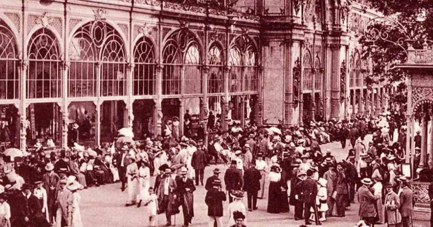

28 dec 21
ZAJECICKA HORKA - №1 în lume în ceea ce privește conținutul
natural magneziu.
By Aqua BohemiaCategory: BlogulVizualizări: 273

28 dec 21
Bilinska kyselka - Pentru ce? Când? Cum?
By Aqua BohemiaCategory: BlogulVizualizări: 273

28 dec 21
Apele medicinale ale Republicii Cehe în timpul
sarcinii.
By Aqua BohemiaCategory: BlogulVizualizări: 273

28 dec 21
Tratamentul și reabilitarea COVID-19 cu minerale Cehe
waters.
By Aqua BohemiaCategory: BlogulVizualizări: 273
ZAJECICKA HORKA - №1 în lume prin conținutul de magneziu natural.
28 decembrie 2021
Bilinska kyselka - Pentru ce? Când? Cum?
28 decembrie 2021
Apele medicinale ale Republicii Cehe în timpul sarcinii.
28 decembrie 2021
Tratamentul și reabilitarea COVID-19 cu ape minerale Cehe.
28 decembrie 2021